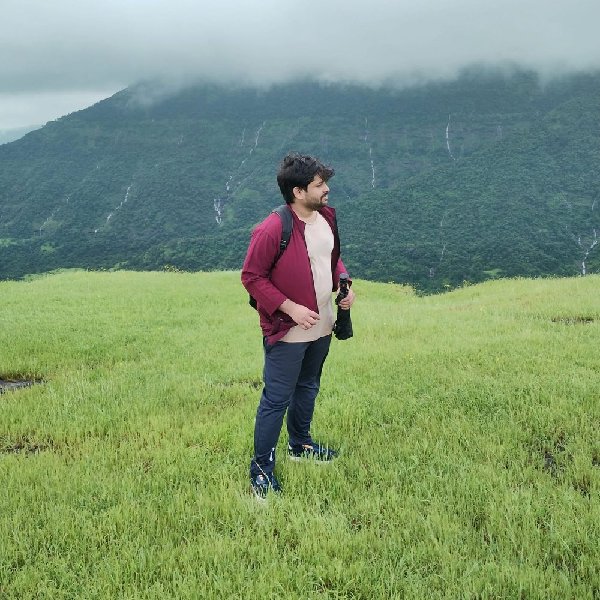

Reading the Earth, layer by layer.
M.Tech. student in Petroleum Geosciences at IIT Bombay (CPI 9.27), working on petroleum geochemistry, vertebrate palaeontology and field geology. CSIR-UGC JRF awardee and GATE Geology & Geophysics AIR 130.

- GATE AIR 130Geology & Geophysics, 2026
- UPSC GSI interviews2024, 2025 and 2026
- CSIR-UGC JRFEarth Sciences, Dec 2024
- ONGC internshipMumbai Offshore Basin, 2023
- IIT JAM AIR 22Out of 2,581 applicants, 2022
- B.Sc. Geology (Hons)1st Division, AMU, 2021
Milestones as strata: the newest sits on top, the oldest at the base.
Education
Ten years of study, from AMU school to IIT Bombay.
M.Tech. in Petroleum Geosciences
M.Sc. in Applied Geology
B.Sc. (Hons.) in Geology
Intermediate (Class XII)
Matriculation (Class X)
Scholastic achievements
Competitive rankings and fellowships from undergraduate study to national examinations.
GATE Geology & Geophysics
All India Rank 130 in 2026.
UPSC Geoscientist (GSI)
Shortlisted and appeared for the interview in three consecutive years.
CSIR-UGC JRF
Competitively awarded Junior Research Fellowship in Earth Sciences.
CSIR-UGC NET
Qualified the National Eligibility Test in Earth Sciences.
IIT JAM, AIR 22
Rank 22 out of 2,581 applicants for the M.Sc. admission test.
BHU PET, Rank 44
Overall rank 44 for M.Sc. Geology.
B.Sc. Geology (Hons)
1st Division, Aligarh Muslim University.
Washington DC Scholarship
Awarded by the AMU Alumni association.
Research projects
Select a project to read the aims, methods and findings.
Field and industry experience
From mapping fold-and-fault belts to interpreting offshore well logs.
Industry and roles
Summer internship, ONGC
- Interpreted well logs to analyse formations and reservoirs.
- Developed a lithofacies profile to interpret subsurface lithology and depositional settings.
- Contributed to georeferencing of data, improving the precision of spatial information.
- Used industry-standard software for analysis, interpretation and visualisation.
Subject Matter Expert, Chegg Inc.
- Solved 500+ academic questions in Geology.
- Kept a high student satisfaction and quality rating through accurate, clear solutions.
- Built skills in analytical problem solving, time management and scientific communication.
Protolith Coordinator, Food and Hospitality
- Managed food and hospitality operations.
- Coordinated meal planning, logistics and vendors for 200+ participants.
Field experience
Fieldwork around Ambaji
- Recognised and interpreted geological structures across the area.
- Dominant reverse faults indicate a compressional regime.
- Visited the Zarivav Marble Mine and an abandoned Zn-Pb-Cu mine in Deri.
Virtual field survey, Udaipur, Rajasthan
Technical skills
Tools used across lab, field and desk work.
- Analytical
- Agilent ChemStation, ChromaTOF
- Geological
- MohrPlotter, GeoRose, Ternary PlotteR
- GIS and remote sensing
- ERDAS Imagine
- Productivity
- Microsoft Word, Excel, PowerPoint
- Programming
- Basics of Fortran and MATLAB
Memberships
Professional and student communities.
ERSA
Earth Science Association, Student Chapter, IIT Bombay
SPE
Society of Petroleum Engineers, Student Chapter, IIT Bombay
AAPG
American Association of Petroleum Geologists
Academic participation and interests
Seminars, workshops and certificates, plus life beyond geology.
Seminars and lectures
- Oct 2024 Ichnology and Sedimentary Geochemistry Seminar, IIT Bombay
- 2022 “Evolution of Oil Industry and Current Challenges”, SPE Student Chapter, IIT Bombay
- June 2022 GeoIBR’22, Geodynamic Genesis of Indo-Burma Range (virtual)
Workshops and events
- 2023 Slogan writing, International Year of Millets, IIT Bombay
- 2022 MATLAB Workshop by AZeotropy, IIT Bombay
Certificates
- Dec 2021 Certificate of Appreciation, National Mathematics Day Quiz
- Nov 2021 International e-Olympiad on Geology
- Oct 2021 GeoFlix: Fundamentals of Remote Sensing and GIS
- Sep 2020 Fun with Plate Movement Vector and Mantle Melting
- Sep 2020 Ore Deposits and Ore Forming Processes
Languages and interests
Languages: English, Hindi, Urdu, Arabic (primary)
Let’s talk geology
Open to research positions, collaborations and conversations about petroleum geochemistry, palaeontology and field geology.